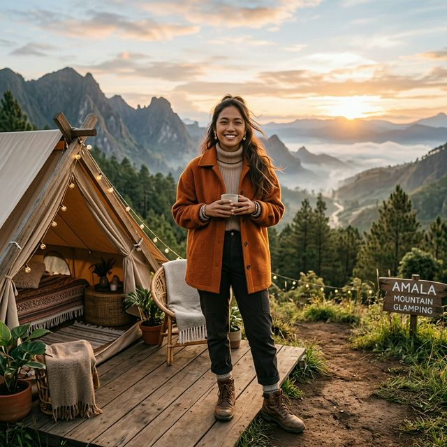

Ingin mendapatkan foto Outdoor Outfit of The Day (OOTD) yang estetik untuk Instagram, tetapi takut kedinginan saat kemping di Kota Batu? Tenang, Anda tidak sendirian!
Kemping atau glamping di kawasan Batu Sunrise Camp dengan udara pegunungan yang dingin sering kali membuat orang salah kostum. Jika hanya mementingkan gaya, tubuh bisa menggigil. Sebaliknya, jika terlalu tebal ala pendaki gunung ekstrem, foto liburan jadi kurang "instagramable". Kuncinya adalah pada pemilihan layering busana bumi (earth tone) dan gaya fungsional.
1. Prinsip Utama: Teknik "Layering" Nyaman
Alih-alih memakai satu jaket yang sangat besar, gunakan teknik tiga lapisan (layering) yang mudah dilepas-pasang:
- Base Layer (Lapisan Dalam): Gunakan baju dalam berteknologi thermal atau turtleneck rajut ketat. Selain hangat, turtleneck memberikan siluet leher yang elegan.
- Middle Layer (Lapisan Tengah): Pilih kemeja flanel berkotak klasik, sweter rajut (knitwear), atau cardigan berpotongan modern.
- Outer Layer (Lapisan Luar): Jaket parka wanita, puffer jacket tak terlalu gembung, atau trench coat simpel dapat melengkapi penampilan Anda dengan sempurna saat malam tiba.
2. Bermain di Palet Warna "Earth Tone"
Mengapa warna earth tone (nuansa bumi)? Karena warna-warna ini berpadu serasi dengan latar belakang hutan pinus, rumput hijau, camp fire, dan langit senja Batu.
Pilih kombinasi warna seperti hijau zaitun (olive green), cokelat khaki, krem (beige), terracotta (merah bata), atau rona mustard. Selain aman di kamera, warna ini meredam kekontrasan yang terlalu menyolok.
3. Pilihan Celana yang Proporsional
Hindari celana jeans ketat yang kaku karena menyerap dingin dan membatasi ruang gerak. Pilihan terbaik untuk tampilan estetik:
- Cargo pants berbahan katun twill atau parasut untuk kesan "adventurous".
- Celana kulot berbahan rajut (knit culottes) yang tebal namun sangat jatuh ketika dipakai, membuat kaki tampak jenjang.
- Bila menggunakan celana pendek jenis skort, pastikan memadukan dengan legging thermal warna gelap di bagian dalam.
4. Sepatu: Di Antara Gaya dan Utilitas
Boots adalah penyelamat utama kemping. Sepatu bot kulit klasik atau sneakers lintas alam (trail sneakers) menambah kesan tangguh yang sangat cocok dengan tema outdoor. Pastikan menggunakan sepatu dengan alas bergerigi agar aman dari rumput basah berembun.
5. Aksesori Penunjang Estetika
Aksesori bukan hanya tentang estetika melainkan menunjang kehangatan tubuh secara dramatis:
- Beanie Hat (Kupluk): Penyelamat jika rambut lepek sekaligus menjaga hangat merata dari kepala.
- Syal Panjang: Kalungkan syal bermotif etnik (seperti pashmina atau tenun lokal) di leher. Cocok dijadikan pelengkap properti sesi foto.
- Kacamata Hitam & Topi Bucket: Aksesori andalan saat sinar matahari menyilaukan mata kala sunrise.
Adiel Ebert Nakula Shandy
Penikmat kopi alam raya dan panduan wisata Batu. Selalu percaya bahwa menikmati alam tetap dapat dilakukan dengan balutan busana yang apik dan bersahabat.